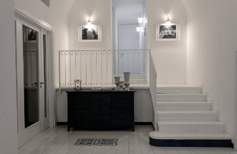
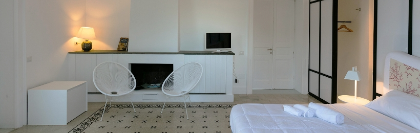
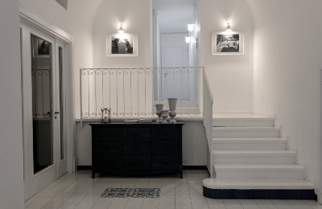
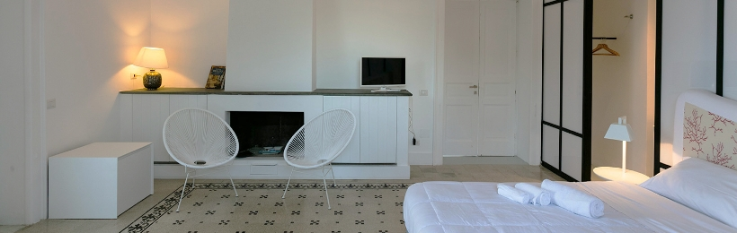
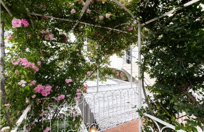
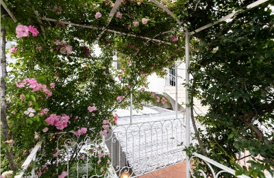

❮
❯


❮
❯
SUPERIOR VISTA
GIARDINO
E’ una camera matrimoniale finemente arredata, ristrutturata con un gusto minimal e moderno ma che nel contempo segue la tradizione locale caprese. La vista giardino è offerta dalla grande finestra che rende la camera luminosa ed energizzante. E’ dotata di tv satellitare LCD schermo grande piatto, minibar e possibilità di connessione internet WI-FI.
 
